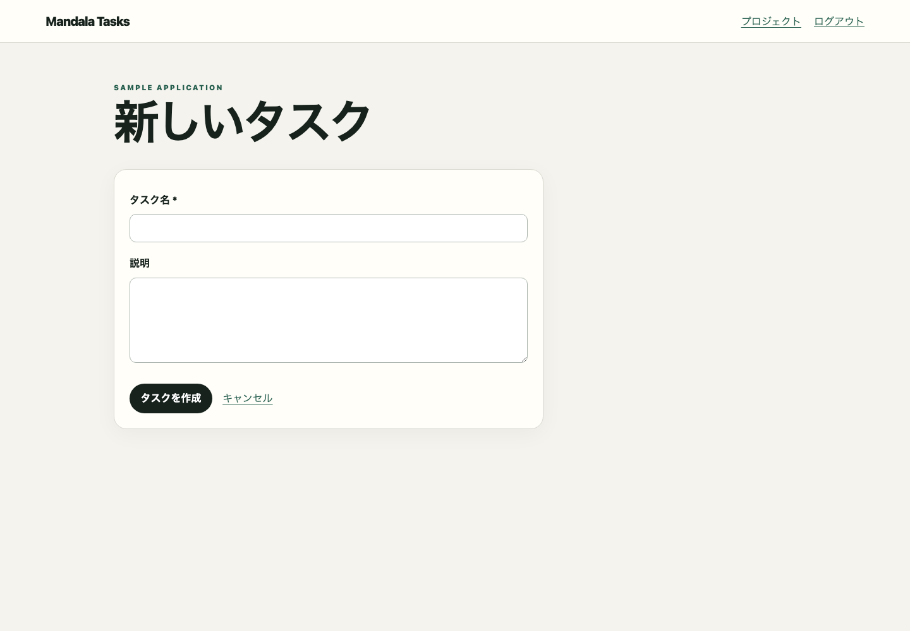

screen:/projects/{id}/tasks/newOBSERVEDタスク作成
終了/tasks/{id}screen:/tasks/{id}screen:/projects/{id}/tasks/newFrontend route /projects/{id}/tasks/new

この画面を開始または終了とする、E2Eで観測済みの1対1の画面遷移です。
各操作の開始状態、終了状態、順序、role、feature flag、結果、関連HTTPを表示します。
/projects/{id}/tasks/new{}
mandala/snapshots/ui/task-create.json